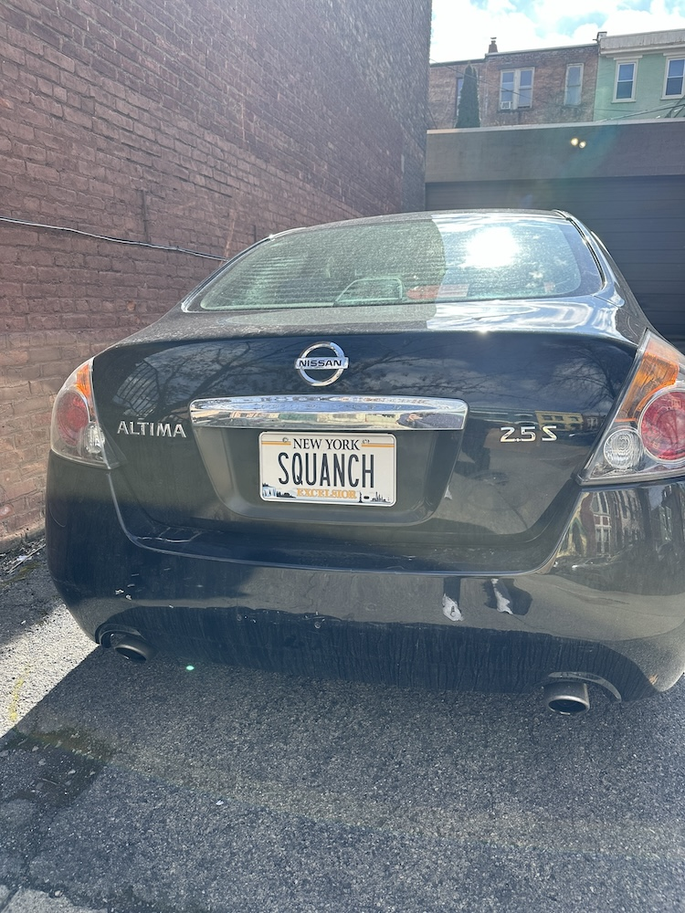
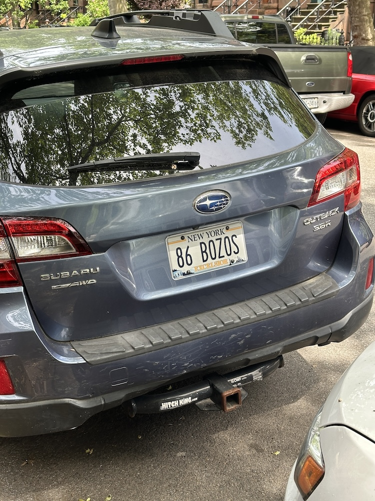
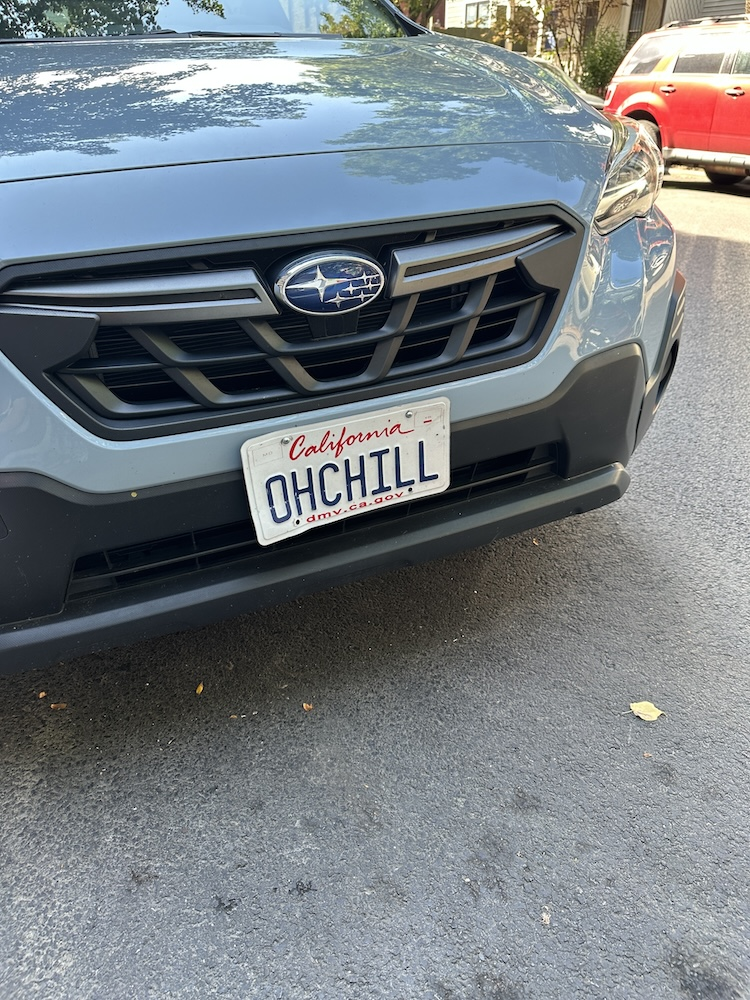
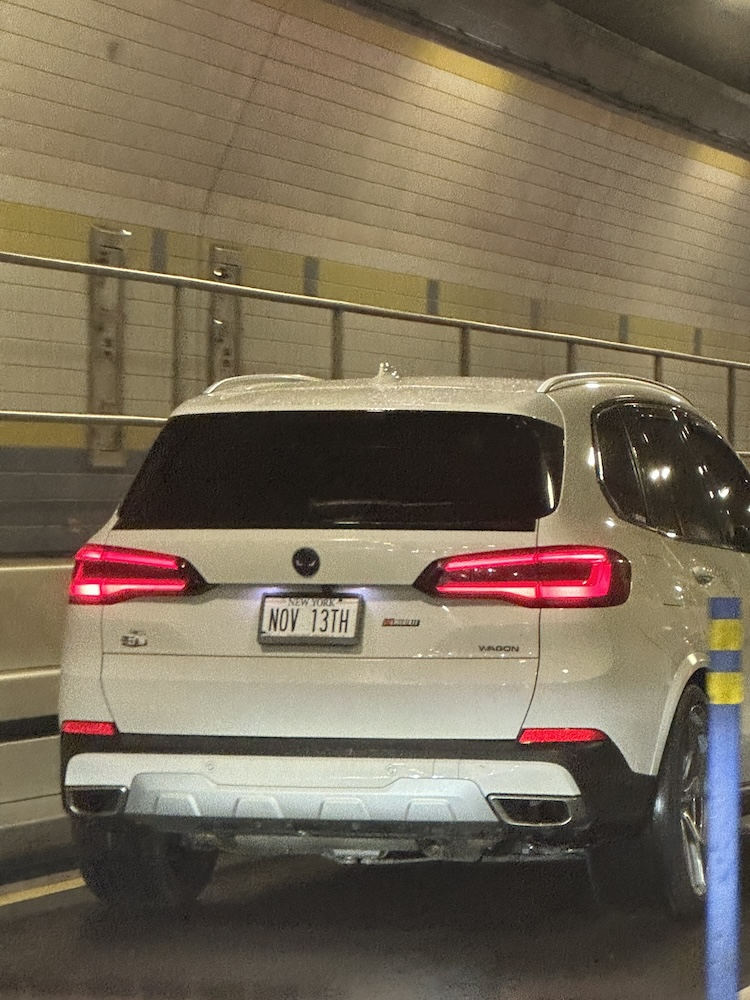

Something I find fascinating is the culture of vanity license plates. People spend extra money to personalize the license plates on their cars, in an effort to send a message to the world. When I see a particularly interesting, strange, funny, or wacky one I try to take a photo. Here are some of my favorites.
I wonder what "SQUANCH" means.
For those who have worked in restaurants and who don't want to deal with any bozos.
A very California license plate.
Perhaps the driver's birthday? Anniversary?